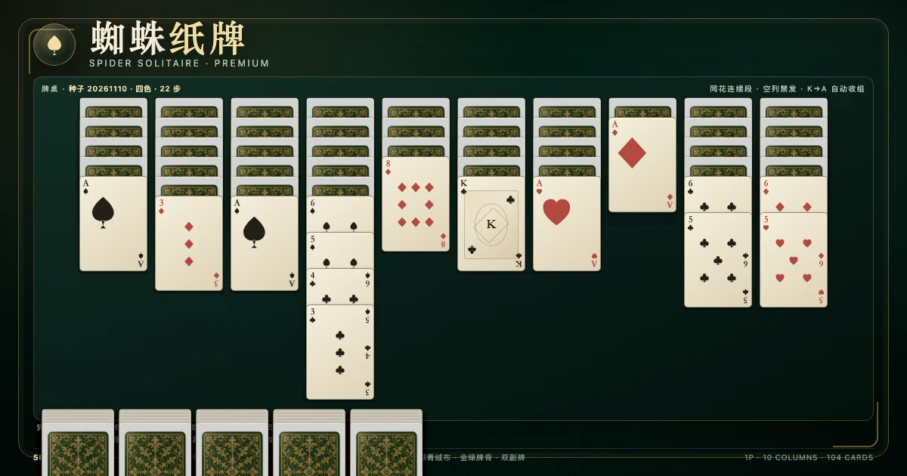

1目标与整体流程
蜘蛛纸牌（Spider Solitaire）是单人的接龙纸牌游戏。牌桌由十列牌和一个牌堆组成。你的目标是把同一花色的 K、Q、J、10、9、8、7、6、5、4、3、2、A 连续排成一列，让系统自动收走；集齐 8 组这样的同花顺即获得胜利。
本实现是单机单人版本，不依赖联网。开局分数为 500，每次移动或发牌扣 1 分，每完成一组加 100 分。除了分数，还会记录步数、发牌次数和用时，方便复盘与刷新本机最佳。
2牌组与三档难度
游戏固定使用 104 张牌，可以理解成两副完整的 52 张扑克牌。无论选择哪一档难度，牌数、列数、发牌次数、移动规则和胜利条件都完全一致，区别只在花色的数量：
点数的顺序是 A、2、3、4、5、6、7、8、9、10、J、Q、K。列内排布时，K 最大，A 最小；完成组则从 K 一路递减到 A。
3发牌布局：10 列与 50 张牌堆
洗牌后，前四列各发 6 张，后六列各发 5 张，合计 54 张。每列只有最上面一张正面朝上，其余为背面。剩余 50 张组成牌堆，正好可以发 5 次、每次 10 张。
这个 6/6/6/6/5/5/5/5/5/5 的分配不是随意写死的：54 张桌面牌加 50 张牌堆牌必须恰好等于 104 张，多一张或少一张都说明发牌实现有误。游戏引擎在每次操作后都会校验全部 104 张牌仍然存在且不重复。
4合法移动：整段同花顺
列内牌按点数递减排列，但不要求花色相同。例如黑桃 8 可以直接放在红心 9 上。真正受花色限制的是「整段移动」：
- 可以移动单张正面牌，或从某张牌起到列尾的一整段。
- 这一整段必须是同一花色，并且点数连续递减。黑桃 9、8、7 可以一起移动。
- 如果一段里混入其他花色，例如黑桃 9、红心 8、黑桃 7，就不能作为一个整体移动；但末尾的黑桃 7 单张仍可移动，红心 8、黑桃 7 这两张也不能一起移动。
- 整段牌必须全部正面朝上；背面牌永远不会被移动。
落点规则
被移动牌的最上面一张，必须放在目标列顶牌大 1 点的牌上，花色不限；目标列为空时，任何可移动段都可以放进去。例如 7 可以放在 8 上，不能放在 7、9 或 6 上。
5五次发牌与空列限制
点「发牌」时，牌堆最上面的 10 张牌会依次给每一列各发一张，全部正面朝上。牌堆一共 50 张，因此最多发 5 次。发牌本身扣 1 分，并且不会改变已经翻开的牌。
只要存在任何空列，就不能发牌。这是标准蜘蛛纸牌的重要限制：你必须先往空列里放一张可移动的牌，把十列都填满，才能继续发牌。空列本身仍然可以接收任何可移动段，这也是整理长列和腾挪空间的关键。
牌堆发空后，如果还有合法移动，就继续整理；如果既没有合法移动、也不能再发牌，本局以「无棋可走」结束。此时可以撤销回看，也可以直接开新局。
6完成组与胜利
当某一列末尾出现同花色的 K、Q、J、10、9、8、7、6、5、4、3、2、A 连续 13 张，且全部正面朝上时，系统会自动把这 13 张收走，放入完成区，并立刻加 100 分。如果这组牌下面还压着背面牌，收走之后那张牌会翻正。
完成组不能手动取消，也不会被再次打散。集齐 8 组完成组，牌桌上 104 张牌全部进入完成区，本局胜利。游戏会显示分数、步数、发牌次数与用时，并把最好成绩保存在本机。
7计分与记录
本实现采用常见的 Windows 风格计分：
因此，理论最高分与移动、发牌次数有关，而不是固定值；少走废步、少发不必要的牌，才能拿到更高分。用时只用于展示和最佳成绩，不直接参与分数计算。
8操作方式
- 点击牌：点一张可移动段的起始牌，整段会高亮；再点目标列即可移动。
- 撤销：工具栏「撤销」或键盘 U，恢复上一步的牌面、分数与完成组。
- 提示：工具栏「提示」或键盘 H，会高亮推荐来源牌与目标列；若建议发牌，会提示发牌。
- 发牌：工具栏「发牌」、点牌堆或键盘 D。存在空列时会被拒绝并提示。
- 新局：工具栏「新局」或键盘 N；难度下拉框会立即以新难度重新开局。
- 键盘：N 新局、U 撤销、H 提示、D 发牌、Esc 取消选中。
牌桌采用响应式布局，在 390px 与 320px 宽的竖屏手机上都能完整显示十列，不会横向滚动。所有工具栏按钮的触控高度都不小于 44px；牌格本身是普通可聚焦元素，避免在窄屏上被误判为大按钮。
9常见问题 FAQ
为什么我的牌不能一起移动？
一起移动的那一段必须同花色并且点数连续递减。跨花色的牌可以单张移动，但不能作为一个整体搬运。检查该段是否全部正面朝上，以及是否从你点击的那张牌一直到列尾都满足条件。
为什么发牌按钮是灰的？
两种可能：牌堆已经发空；或者十列中存在空列。存在空列时，标准规则不允许发牌，必须先把空列填上一张牌。界面对这两种情况都会给出提示。
空列可以放什么？
任何合法可移动段都可以放进空列，包括一整列同花顺。把长列整体搬到空列，是腾出另一列空间的常用手段。
为什么完成组会自动消失？
这不是消失，而是被收入完成区。收走一组会加 100 分，并让下面的背面牌翻正。完成区最多显示 8 个槽位，集齐 8 个即获胜。
撤销会影响计分吗？
不会留下额外惩罚。撤销会完整恢复上一步的快照，包括分数、步数、发牌次数、翻牌状态和完成组；你可以放心用来试不同路线。
一色、二色、四色应该先玩哪个？
建议从一色开始熟悉十列布局、空列禁发和自动收组；二色开始注意同花段；四色最难，因为同花连续段明显变少，需要更谨慎地规划空列和发牌时机。
能不能看到牌堆里的牌？
不能。牌堆保持背面朝上，发牌时才会逐列翻开。游戏引擎不会把未发牌堆的牌面提前暴露给界面。
10参考与延伸


视频来源（Bilibili）：
BV1HT4y1B7rf · 不会玩蜘蛛纸牌？蜘蛛纸牌新手教学
BV1e7411o7JY · 蜘蛛纸牌高级解说教程 1
BV16gFWeWEGk · 特级大师四色三连胜
BV13MDuBiETK · 棋牌游戏 · 单人 · 蜘蛛纸牌
本页规则与游戏内引擎使用同一套判定：104 张牌守恒、10 列、5 次发牌、同花连续段、空列禁发、K→A 自动收组、8 组胜利与 500 分基准。若你在游戏中遇到与本文不一致的行为，请以牌桌实际提示为准并反馈。